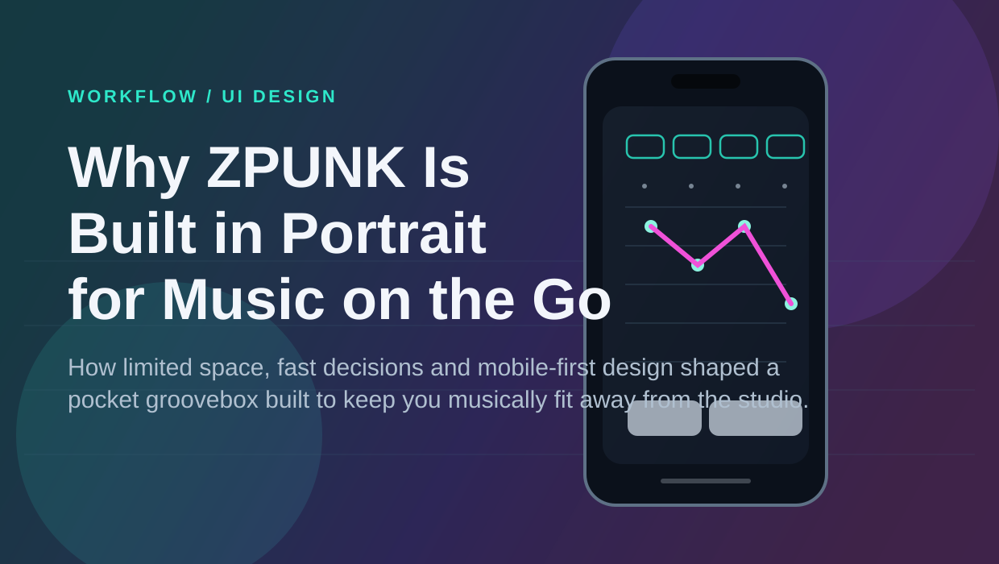

ZILLATRONICS / FIELD NOTES
The Blog.
Thoughts on mobile music-making, sampling, sequencing and the process of building ZPUNK. Practical ideas from someone making music and the tools to make it.
Latest posts
02 ARTICLES
WORKFLOW / UI DESIGN
Why ZPUNK Is Built in Portrait for Music on the Go
How a phone-first layout, limited space and real mobile use shaped a groovebox built to keep you musically fit away from the studio.
NOVEMBER 1, 2026 · 7 MIN READ
Read the article →
SAMPLING / TECHNIQUE
How to Sample Chops Effectively for Electronic Music
Seven practical ways to turn sampled fragments into grooves that feel musical, intentional and alive.
NOVEMBER 1, 2026 · 6 MIN READ
Read the article →